I switched to Linux
You can too
Presented by Stephen Cross
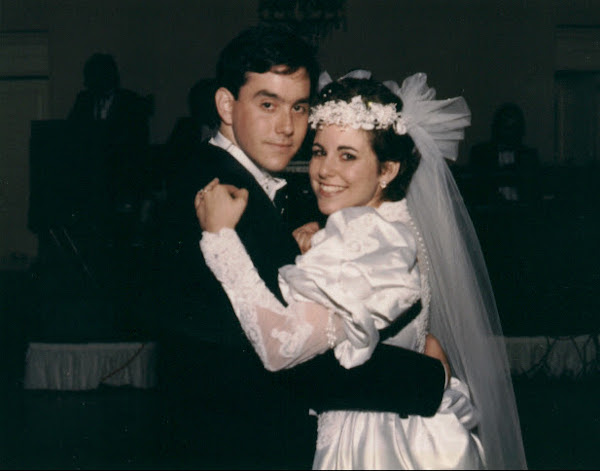
1990
Love Afair
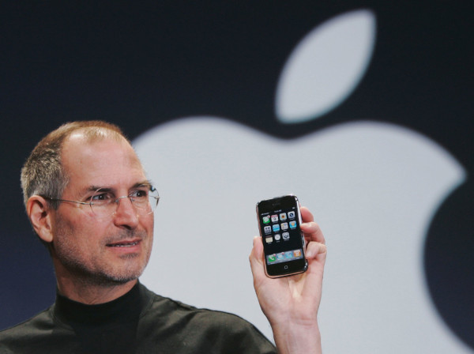
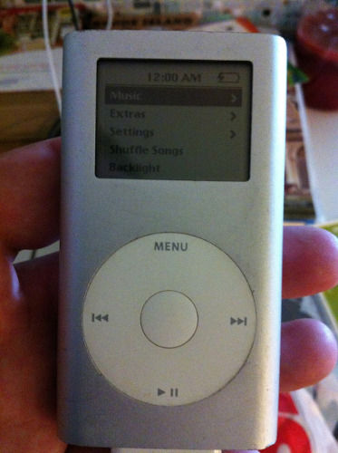
2004
2005
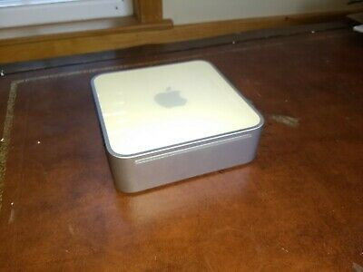
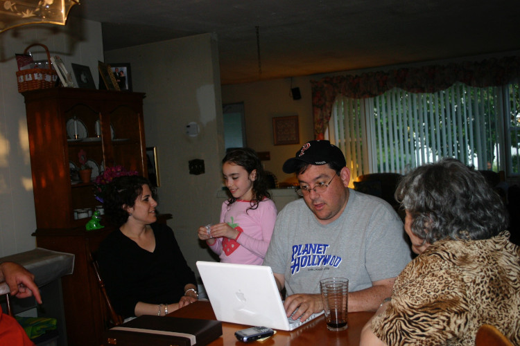
2007
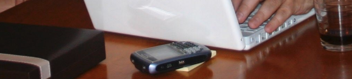
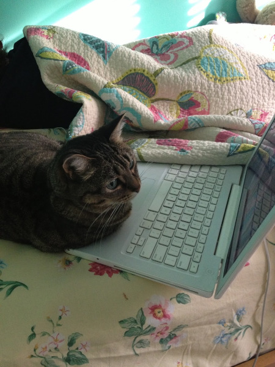
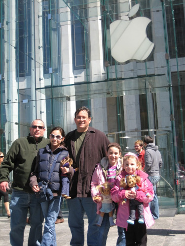
Love on the Rocks?
Why switch?
For me...
Apple's Direction
Professional Development
Phil Schiller - 2012
“It's the most beautiful computer we've ever made”
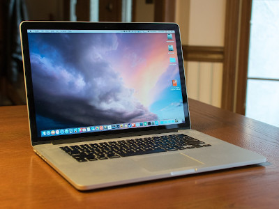
2015 MBPro (3rd Gen)
2016 Release of 4th Gen MBPro
2015 MBPro discontinued in mid 2018.
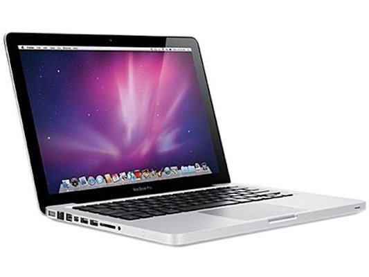
2011 13" MBPro
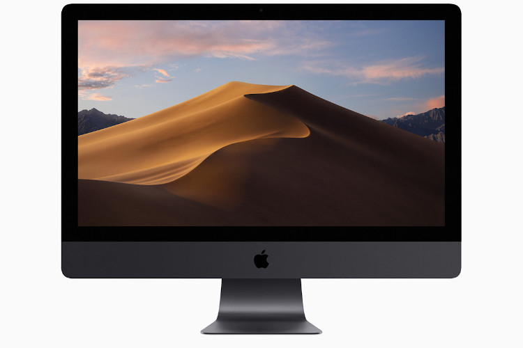
Mojave Min Req: MacBook Pro (Mid 2012 or newer)
2011 MBPro: Core i5 2.4Ghz
In my opinion
- Beauty over function.
- Consumer not the professional.
- Less choices.
- Disposable computers.
Technical Skills - Drupal Dev
- PHP
- Javascript
- Twig
- CSS
- Design
Modern Workflows
Local Dev - Front Build - CI - Deployment - Testing
SKILL: DevOps
Drupal and Linux
Production servers - Linux
Local Dev Enviroment - Linux (via Docker)
Thought Process
If I work in Linux...
Closer to my deployment environment.
Get comfortable (remove technology fear).
Be better at DevOps type things.
Be more valuable to your team.
Switch to Linux.
Windows - Mac OS - Chrome OS
- Proprietary
- Developed and controlled by one company
- Sinlge version per hardware version
Linux
- Open Source
- Developed by over 200 company, many non-profit organization, thousands of developers.
- Any can modify it
- Someone has an idea...
There's a Linux for that.
Distributions
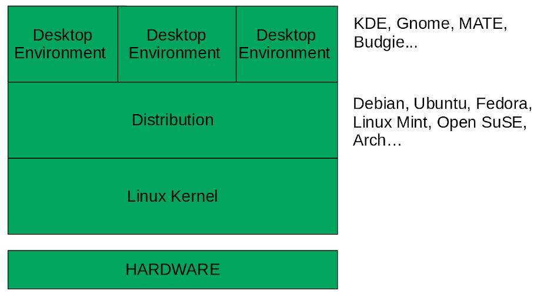
Flexibility
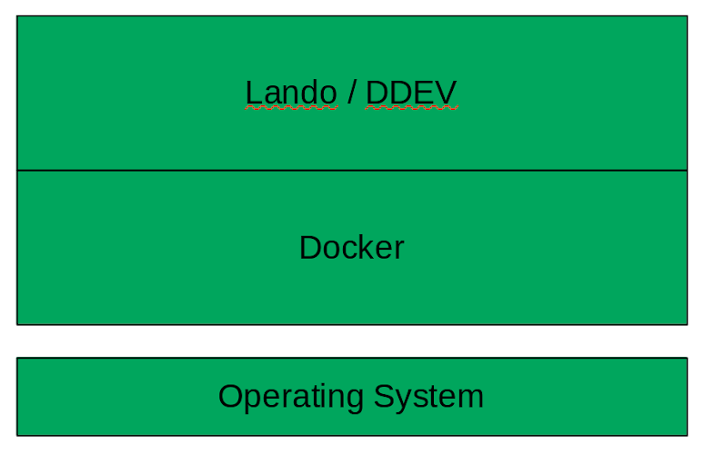
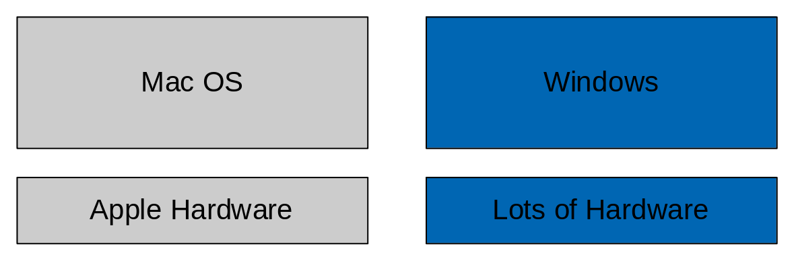
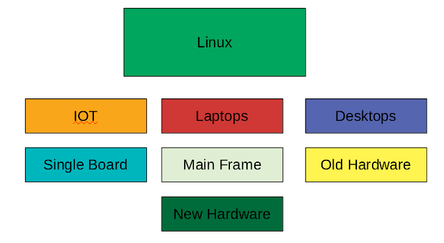
Your Choice
Beefy desktop with four displays
Light weight, minimal port laptop for traveling
Laptop to have SD reader, and USB 3.0 ports
Small profile, quiet computer for a family room
How did I switch?
Education
New Hardware
- Ships with Linux
- System 76
- Dell
System 76
- Works out of the box
- Execellent customer support
- Computer I want to use
- Time to explore, test, nuke if need to
Breaking the Chains
Choosing open-source, multi-platform apps
For me: Linux, Mac, iOS, Android, Web Browsers
Drupal Dev Apps
- Docker (Lando/DDEV) - PASS!
- Drupal VM (Virtualbox, Vagrant, Ansible) - PASS!
- IDE (PHP Storm/VS Code) - PASS!
- Sequel Pro - ?
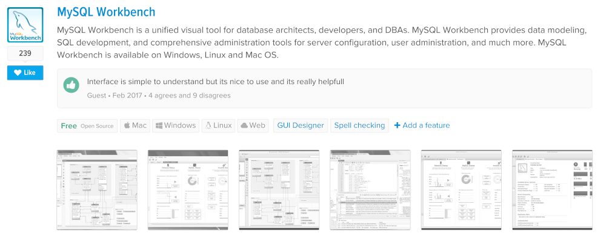
Google & AlternativeTo.net
MS Office Apps
- LibreOffice - Open Source
- Reads and writes to MS and standard formats
- Perform all common tasks
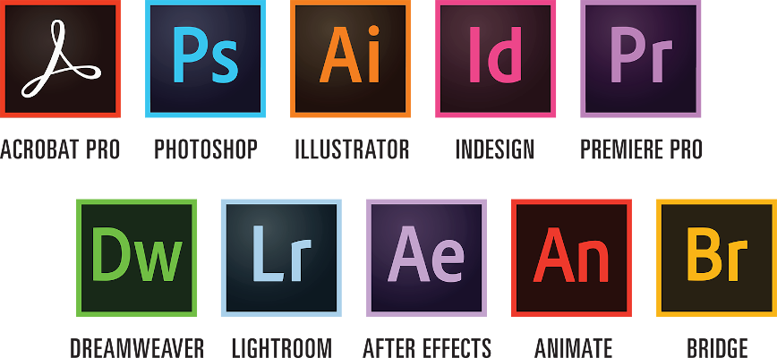
No Linux Options
Run Windows in a virtual machine
Use Wine - (Wine Is Not an Emulator)
Find alternative software
My Alternatives
- Adobe Photoshop -> Gimp (for basic image editing)
- Audition -> Audacity (great replacement)
Other Apps
- Note taking -> Standard Notes
- Screenshot -> Flameshot
- Video Editing -> KDenLive
Apple
- Still use iOS (iPhone and iPad)
- iMessage -> Telegram
During Transition
- Get comfortable & build confidence
- Sense of freedom
- Realization: OS is just another App
- Distro-hoping
$300 Experiment
- Drupal development laptop
- Eveyday use
- $300
T420 - $150
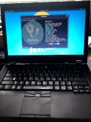
- Ebay: $75
- Battery: $42.79
- 128 GB SSD: $21.35
- i5 Gen 2 - 3.2 ghz
- 8G Ram
Summary
- Desktop Linux is real
- Take control
- Grow your skils and confidence
- Choose OS agnostic hardware
- Buy hardware shipped with Linux
Fall in love again.
Switch to Linux